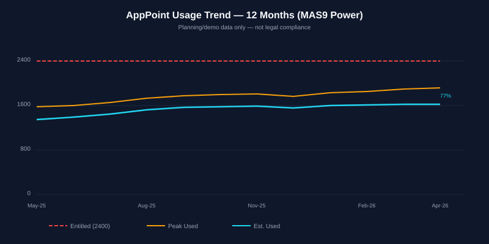
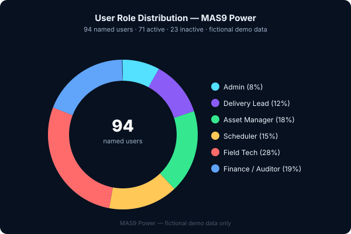
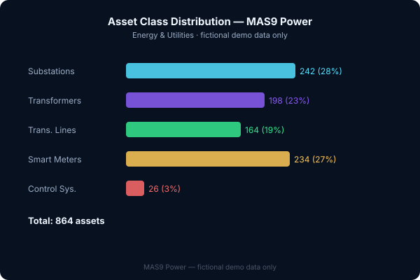
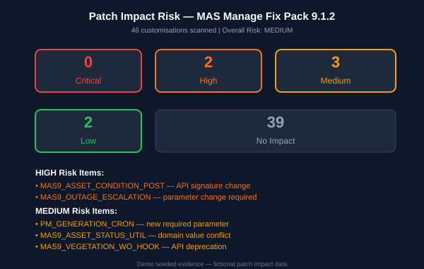
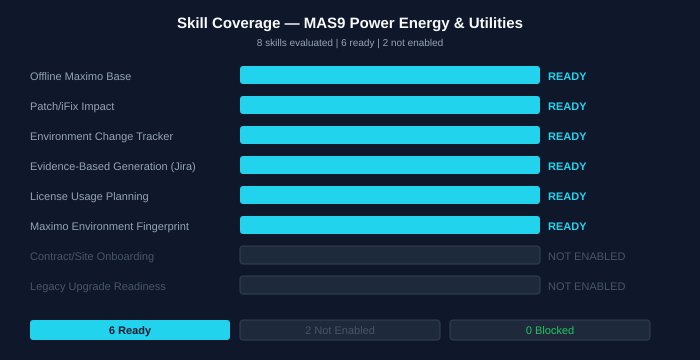
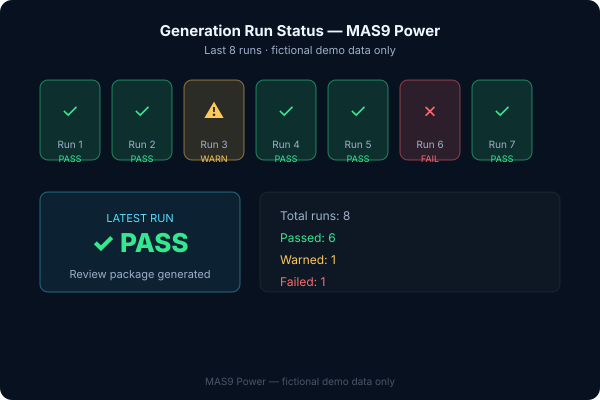
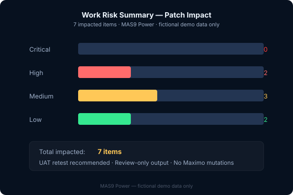
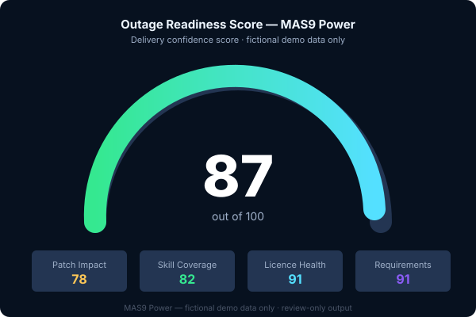

Media gallery
Website-safe charts now. Screenshots after review.
The public site includes generated SVG charts and Mermaid diagrams. App screenshots and video are intentionally marked pending until reviewed for local URLs, fake emails, debug panels, and internal-only content.
Generated charts

User Role Distribution

Asset Class Distribution

Patch Impact Risk

Skill Coverage Summary

Generation Run Status

Work Risk Summary

Outage Readiness Score
Pending review
Screenshots
Playwright specs exist, but screenshots should be reviewed before public use.
Pending review
Video walkthrough
Raw walkthrough video should be reviewed and edited before publishing.
Never publish
Trace files
Playwright traces may contain DOM snapshots and action logs. Keep internal only.